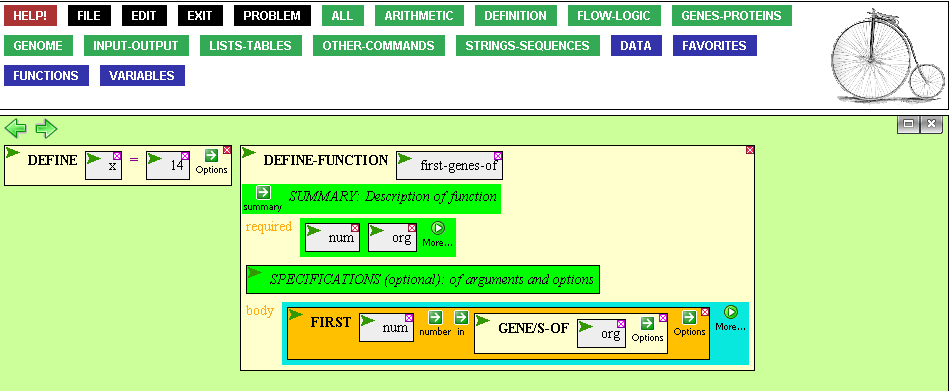
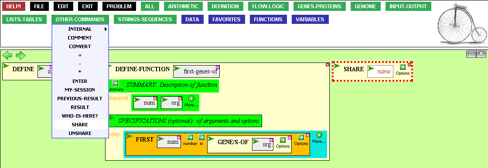
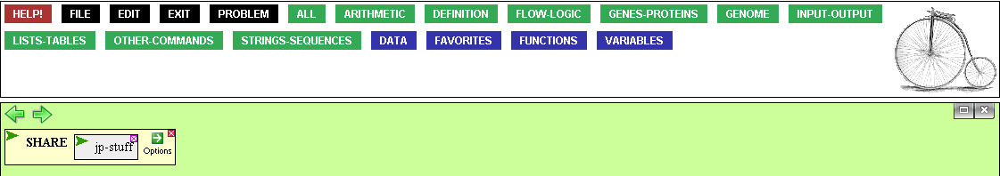
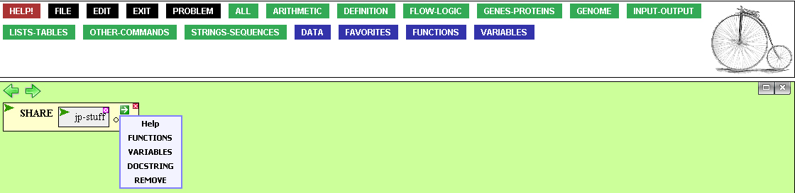
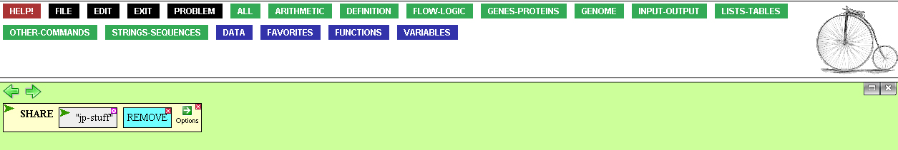

Sharing functions between users
It is easy to share your code with other VPL users, and just as easy
to have them share code with you.
The user JPM has defined a variable X and a function FIRST-GENES-OF.
The variable X, set at 14, is on the blue VARIABLES menu in the palette.
The function FIRST-GENES-OF takes two arguments, a NUMBER and an ORGANISM,
and returns the first NUMBER of genes in ORGANISM. It can be found in the
blue FUNCTIONS menu in the palette.

The user JPM tells his buddy MDS that these new things he has defined
have been very helpful to him, and decides to share the variable
X and the function FIRST-GENES-OF. He brings down
OTHER-COMMANDS --> SHARE from the palette.

A set of functions and variables that one makes available for sharing
is called a package, and each package needs a name.
JPM calls his package "jp-stuff" by entering the name into the 'name' box.

To indicate which functions and variables to share, JPM mouses over
the green 'Options' arrow, bringing up a menu with 4 options:
FUNCTIONS, VARIABLES, DOCSTRING, and REMOVE.

Clicking on the FUNCTIONS and VARIABLES options adds 2 blue subboxes to the
SHARE box.

Since JPM has only one function and one variable, he can just type
their names into the boxes. If he wanted to share more than one,
he would have to type in a list of functions. To illustrate,
JPM will type X into the VARIABLES box, and a list containing
FIRST-GENES-OF into the FUNCTIONS box. He will also add some
documentation using the DOCSTRING option from the green 'Options' arrow.

After JPM executes the share box, he tells his friend MDS.
MDS logs onto his own VPL and selects from the palette
FILE --> User Contributed Stuff

This brings up a popup window with all the
user contributed packages, along with what functions, variables, and
documentation they contain.

After MDS clicks on the 'Use this package' link, the variable
X is added to his VARIABLES palette menu, and the function FIRST-GENES-OF
is added to his FUNCTIONS palette menu. Now MDS can use JPM's variable
and function!
Once MDS is done using JPM's code, he can stop sharing it by bringing down
OTHER-COMMANDS --> UNSHARE from the palette and typing the package name
into the 'name' box.

On the other hand, if JPM decides he doesn't want to share his code anymore,
he can bring down OTHER-COMMANDS --> SHARE, type in the name of the package
he wishes to forbid others from using, and select 'REMOVE' from the
green 'Options' arrow.

Collaboration between users is a good thing, and the VPL's SHARE command
is a great way to do it.